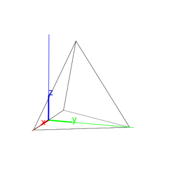
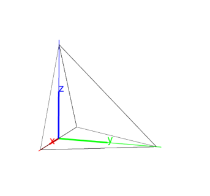

14.16.2 Tetrahedrons:
tetrahedron
pyramid
The
tetrahedron
creates tetrahedra.
pyramid
is a synonym for
tetrahedron
.
tetrahedron
command takes three or four arguments:
A
,
B
,
C
, three points.
Optionally
D
, another point.
tetrahedron(
A
,
B
,
C
)
returns and draws the regular tetrahedron given by:
One edge is
AB
.
One face is in the plane
ABC
, on the same side of line
AB
as is
C
.
The tetrahedron is on the side of plane
ABC
that makes the points
A
,
B
and
C
counterclockwise.
tetrahedron(
A
,
B
,
C
,
D
)
returns and draws the tetrahedron
ABCD
.
Examples
Input:
tetrahedron([-2,0,0],[2,0,0],[0,2,0])
or:
pyramid([-2,0,0],[2,0,0],[0,2,0])
Output:

Input:
tetrahedron([-2,0,0],[2,0,0],[0,2,0],[0,0,2])
Output:
